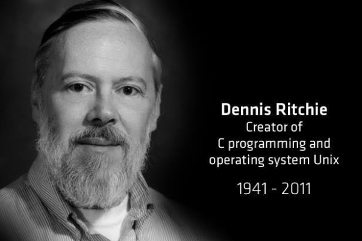

C Programming Language: An Overview
Introduction
C is a high-level programming language that was developed by Dennis Ritchie between 1969 and 1973 at Bell Labs. It is widely used for system programming and embedded systems due to its efficiency and control. C is known for its powerful features and flexibility, allowing programmers to write complex programs while maintaining performance.
History
The C language was developed as an evolution of the B language, which itself was derived from BCPL. It was designed to be compiled using a relatively straightforward compiler, which made it a popular choice for developing operating systems and other critical software. The language has undergone several revisions, with the most significant being ANSI C and ISO C standards.
Features
C programming language offers several features, including:
- Low-Level Access: C provides low-level access to memory through pointers, making it suitable for system-level programming.
- Portability: C programs can be compiled and run on different platforms with minimal changes.
- Efficiency: C is known for its performance efficiency and speed, making it a popular choice for applications requiring high performance.
- Modularity: The language supports functions, which helps in organizing code into modular units.
- Rich Library: C has a rich set of standard libraries that provide a wide range of functions for various tasks.
- Structured Programming: C promotes structured programming through the use of functions, loops, and conditional statements.

Syntax and Structure
C syntax is concise and provides a rich set of operators and control structures. Here are some key elements of C syntax:
- Variables and Data Types: C supports various data types such as int, float, char, and double. Variables must be declared before use.
- Control Structures: C includes control structures like if, else, switch, for, while, and do-while to manage the flow of the program.
- Functions: Functions are a fundamental part of C. They allow code to be organized into reusable blocks.
- Pointers: Pointers in C are variables that store memory addresses. They provide low-level memory manipulation capabilities.

Applications
C is extensively used in various domains, including:
- Operating Systems: The majority of operating systems, including Unix and Linux, are written in C.
- Embedded Systems: C is used for programming microcontrollers and embedded systems due to its efficiency and low-level capabilities.
- Game Development: Many games and game engines use C for its performance and control over system resources.
- Database Systems: Popular database management systems like MySQL and Oracle are written in C.
- Compilers: C is often used to write compilers for other programming languages.
- Networking: C is used in developing network protocols and communication systems.
Advantages
C programming offers several advantages:
- Performance: C provides excellent performance due to its close-to-metal programming capabilities.
- Control: It offers fine-grained control over system resources and memory.
- Portability: C programs can be compiled and executed on different hardware platforms with minimal modifications, thanks to its standardized nature.
- Extensive Use: The language's extensive use in legacy systems and modern applications means there's a large pool of resources and libraries available.
- Community and Support: C has a vast community and extensive documentation, making it easier to find solutions to problems and learn the language.

Challenges
Despite its strengths, C programming comes with its own set of challenges:
- Memory Management: C requires explicit memory management, which can lead to issues such as memory leaks and pointer errors if not handled properly.
- Complex Syntax: The syntax of C can be complex and difficult for beginners to master, particularly when dealing with pointers and memory allocation.
- Lack of Modern Features: Compared to modern languages, C lacks some built-in features and abstractions that facilitate easier and safer programming.
- Error Handling: C does not have built-in error handling mechanisms like exceptions, which can make it harder to manage errors in larger programs.

Learning Resources
For those interested in learning C programming, here are some recommended resources:
- Books: "The C Programming Language" by Brian W. Kernighan and Dennis M. Ritchie is a classic reference. "C Programming: A Modern Approach" by K. N. King is another comprehensive guide.
- Online Tutorials: Websites like Codecademy, Coursera, and Udacity offer interactive C programming courses and tutorials.
- Forums and Communities: Engage with communities on platforms like Stack Overflow and Reddit to ask questions and share knowledge.
- Practice Platforms: Websites like LeetCode, HackerRank, and CodeSignal provide coding challenges and exercises to practice C programming.
Conclusion
C remains one of the most influential programming languages, serving as the foundation for many modern languages and systems. Its combination of performance, efficiency, and portability makes it a valuable tool for programmers. Understanding C not only opens doors to system-level programming but also provides a strong base for learning other programming languages and concepts.